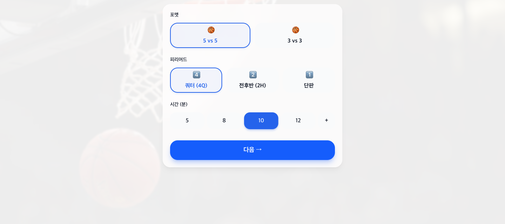
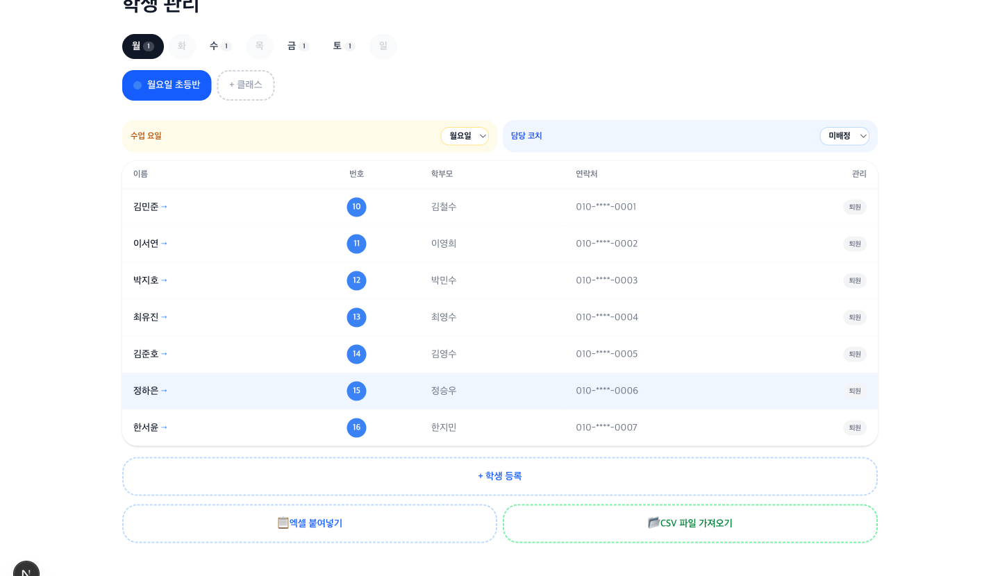
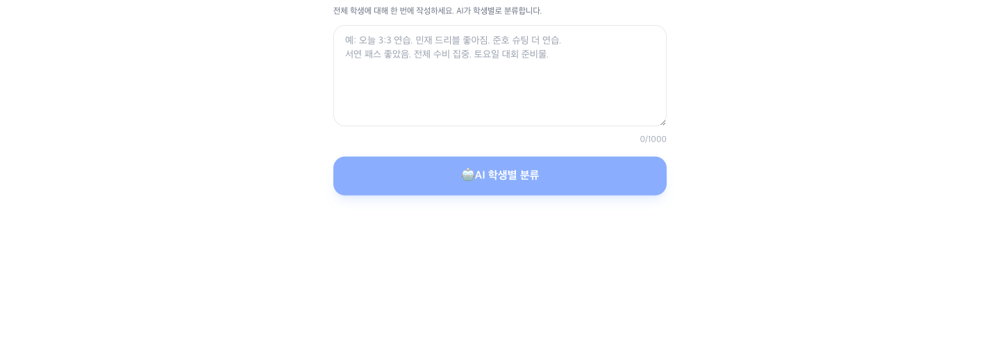
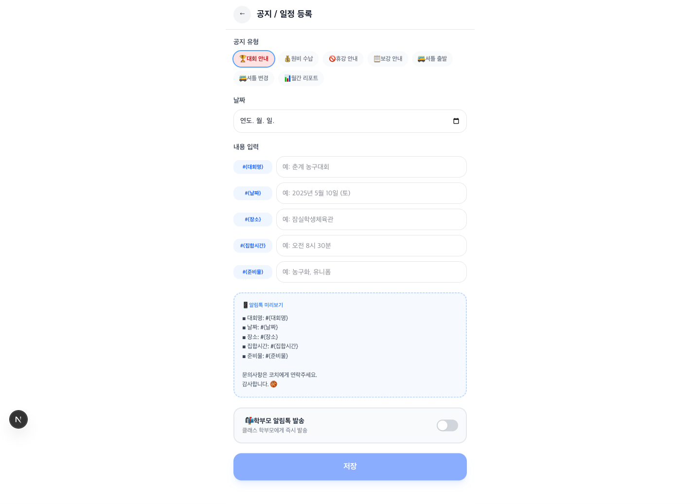
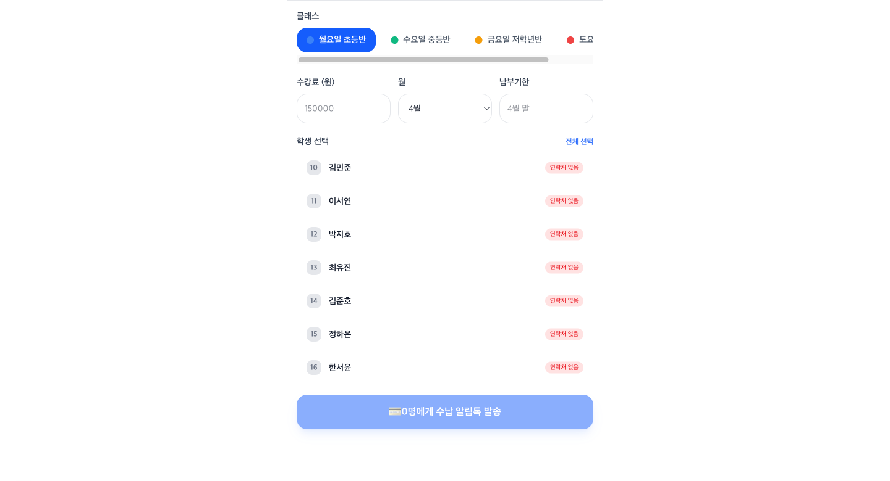

기록 병목
수업과 경기 기록이 종이, 카톡, 기억 속에 흩어져 시즌 데이터로 남지 않습니다.
남겨야 할 것: 선수별 성장 이력경기 기록, 출결, 알림장, 수납 안내를 한 흐름으로 연결합니다. hoopnote는 원장님의 시간이 아니라 학부모가 볼 수 있는 성장의 증거를 쌓습니다.
학원명·이메일·학생 수만 남기면 카톡 상담 없이 도입 안내 정보 페이지를 보내드립니다.
농구학원 운영은 출결 하나로 끝나지 않습니다. 기록이 흩어지면 신뢰가 쌓이지 않고, 신뢰가 쌓이지 않으면 좋은 수업도 재등록과 소개로 이어지기 어렵습니다.
수업과 경기 기록이 종이, 카톡, 기억 속에 흩어져 시즌 데이터로 남지 않습니다.
남겨야 할 것: 선수별 성장 이력학부모의 질문은 늘 같습니다. "우리 아이가 정말 늘고 있나요?" 데이터 없이 답하면 설득력이 약해집니다.
보여줘야 할 것: 성장 리포트각 수업이 끝난 뒤 바로 남기지 못하고 하루 끝에 몰아서 쓰면, 기억은 흐려지고 시간은 더 들고 피로만 쌓입니다.
줄여야 할 것: 반복 안내 업무좋은 수업을 해도 증거가 남지 않으면 재등록 시즌에 다시 말로 설득해야 합니다.
쌓아야 할 것: 상담과 재등록 자료버튼을 찾을 필요 없습니다. 매일 아침 hoopnote 원장 대시보드에 들어오면 AI 비서가 출결, 수업 메모, 수납 안내 타이밍을 감지해 만들어 둔 초안이 기다리고 있습니다. 원장님은 한 마디로 승인하고, 발송은 카카오 알림톡으로 나갑니다.
코치와 원장님이 매일 여는 화면 그대로입니다. 도입 안내를 신청하면 같은 화면을 첫 달 무료로 직접 써볼 수 있습니다.





위 화면은 시연용 데모 학원 데이터입니다. 실제 학생·학부모 정보는 표시되지 않습니다.
기록을 한 번 남기면 운영, 학부모 신뢰, 성장 데이터가 함께 업데이트됩니다. 원장님이 더 오래 일하지 않아도 학원 운영 자산은 계속 쌓입니다.
득점·리바운드·어시스트를 탭으로 남기면 선수별 성장 곡선과 월간 리포트가 쌓입니다. 기록은 더 이상 경기 후 사라지지 않습니다.
수업 중 남긴 한 줄 메모를 학부모가 이해할 수 있는 성장 언어로 바꿉니다. 매주 쌓이는 피드백이 상담의 근거가 됩니다.
명단, 출석, 일정, 보강 흐름을 한 화면에 묶습니다. 코치가 기록하면 원장님은 누락과 반복 안내만 확인하면 됩니다.
선수 단위 득점·리바운드·어시스트를 탭으로만 기록합니다. 쿼터가 끝나면 팀 지표, 시즌이 끝나면 학생별 성장 그래프가 자동으로.
코트 옆에서 30초만 메모하세요. 학생별 수업 이력과 원장님 평소 어투를 학습한 AI가 완성된 알림장을 준비해 놓습니다.
비교 기준을 출결 기능과 가격으로 두면 비슷해 보입니다. hoopnote는 기록, 리포트, 학부모 신뢰까지 연결되는 농구학원 전용 흐름을 만듭니다.
기존종이 / 엑셀
hoopnote스마트폰 탭 기록
기존퇴근 후 1인당 5분 × N명
hoopnoteAI 초안 → 확인만 하면 발송
기존수기 기록 → 월말 취합
hoopnote탭 30초 · 자동 리포트
기존엑셀 / 기억 / 개별 연락
hoopnote결제선생 링크 안내 · 장부는 원장님 관리
기존누적 데이터 없음
hoopnote기록 누적 + 성장 분석
엑셀 붙여넣기로 시작, 탭 기록으로 진행, 확정 버튼 하나로 마무리. 처음부터 새로 배울 도구가 아니라 기존 운영 흐름을 정리합니다.
엑셀로 학생 명단을 한 번에 등록 완료. 학부모 연락처가 곧 알림 수신 대상이 됩니다.
8개 버튼 UI로 설계된 스마트폰 화면에서 3초 이내에 상황을 기록합니다.
"확정" 버튼 하나면 박스스코어 생성, AI 알림장, 카카오 알림톡 발송까지 한 번에 처리됩니다.
학원 규모와 지금 쓰는 방식에 따라 hoopnote가 줄여줄 수 있는 병목이 달라집니다. 먼저 우리 학원에 맞는 흐름인지 확인하세요.
hoopnote 요금은 재학생 규모에 따라 월 10만원대부터 책정됩니다. 정확한 금액은 도입 안내에서 메일로 알려드립니다. 어느 규모든 첫 달은 완전 무료이고, 코치·클래스는 무제한입니다.
재학생 100~299명은 월 10만원대, 300~499명은 월 30만원대, 500명 이상은 월 50만원대입니다. 정확한 금액은 도입 안내 메일로 알려드립니다.
수납 알림톡은 발송만 보조합니다. 결제 금액과 장부는 원장님이 결제선생에서 직접 관리합니다.
유소년 농구 학원과 함께 운영하며 현장 피드백으로 만들었습니다.
"수업 끝나고 메모만 남겼는데 알림장 초안이 완성돼 있었어요. 일일이 타이핑하던 게 사라졌습니다."
"엑셀 명단을 붙여넣었더니 학생 등록부터 수강료 플랜까지 한 번에 끝났어요. 시작이 제일 쉬웠습니다."
"결제선생에서 확인한 미수 대상에게 바로 알림톡을 보낼 수 있어요. 결제와 장부는 제가 직접 관리해서 안심됩니다."
답이 없는 질문은 hello@hoopnote.kr로 보내주세요. 하루 안에 답변드립니다.
유소년 농구 학원을 위한 경기 기록, AI 알림장, 학부모 소통, 성장 리포트 운영 시스템입니다. 코치가 기록하면 AI가 학부모 알림장과 리포트 초안을 만들고, 원장님 승인 후 카카오 알림톡으로 발송합니다.
아닙니다. 학부모는 카카오톡 알림톡으로 알림을 받습니다. 채널 친구 추가 없이 휴대폰 번호만으로 받아보실 수 있습니다.
네. 원장님이 카카오톡으로 초대 링크를 보내면, 코치가 링크 클릭 → 카카오 로그인 → 원장님 승인 후 바로 사용 가능합니다. 코치 수 무제한입니다.
네. hoopnote는 수납 알림톡에 결제선생 결제 링크를 안내할 수 있습니다. 실제 결제와 장부는 원장님이 결제선생에서 직접 관리하고, 학원비는 원장님 명의 계좌로 바로 입금됩니다. hoopnote는 청구 안내와 미수 관리를 돕기 위해 청구 금액·결제 상태는 다루지만, 카드번호 등 결제수단 정보는 보관하지 않습니다.
대회 안내, 수납 안내, 휴강 안내, 보강 안내, 셔틀버스 출발, 셔틀버스 변경, 미출석 알림, 미수금 알림 총 8종의 템플릿을 제공합니다. 유형을 선택하고 내용만 입력하면 즉시 발송됩니다.
네. 엑셀을 붙여넣으면 AI가 명단을 해석해 학생 등록부터 수강료 플랜까지 한 번에 구축합니다.